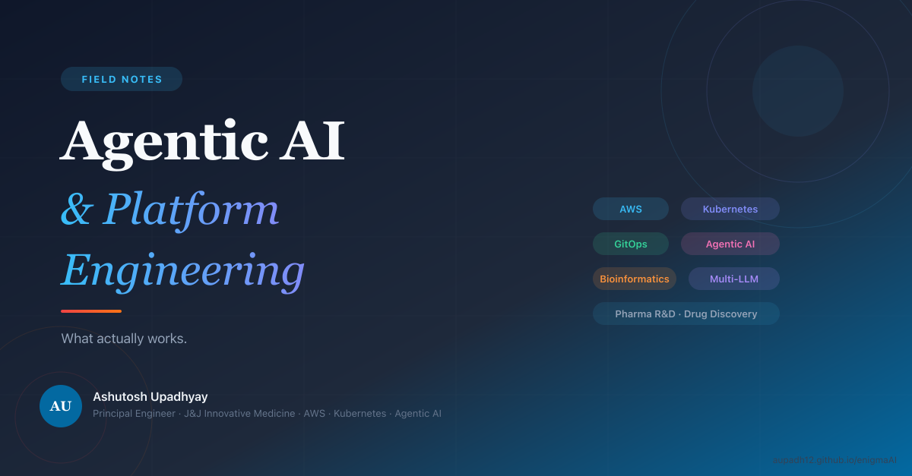

Building AI With AI on Claude Code
How I use Claude Code's agent system to build AI systems — with a mandatory Advisor that catches production bugs, persistent memory that compounds across sessions, and a full EKS deployment architecture.
Read →
Field Notes RSS
Notes on cloud platform engineering, GitOps, and agentic infrastructure for pharmaceutical R&D — what actually works.
Principal Engineer @ Johnson & Johnson Innovative Medicine — Building Agentic AI for Drug Discovery | Imaging, Omics, AWS, GitOps, Kubernetes, Multi-LLM Agentic Systems (Bedrock, Claude, OpenAI)
I build the platforms that let scientists focus on curing disease instead of fighting infrastructure.
As a Principal Engineer with 12 years in enterprise cloud, I specialize in implementing Agentic AI and production-grade platform engineering for pharmaceutical R&D on AWS. My current focus is on embedding AI agents and LLM-assisted workflows, including Claude Code, into drug discovery pipelines, compressing development cycles and unlocking capabilities that were previously out of reach for science teams.
I've architected bioinformatics and MLOps platforms on AWS EKS, and migrated critical research pipelines to production-grade Argo Workflows. I work closely with scientists, biologists, data engineers, and R&D leadership, bridging the gap between infrastructure and scientific outcomes.
My edge: I don't just build platforms. I make them disappear so the science can move faster.
Connect on LinkedInTry a different search term or clear your filters.
How I use Claude Code's agent system to build AI systems — with a mandatory Advisor that catches production bugs, persistent memory that compounds across sessions, and a full EKS deployment architecture.
Read →How I built a 33-tool AI agent that autonomously queries databases, builds knowledge graphs, and generates research reports — running on Kubernetes.
Read →Why one agent isn't enough — and how to build a team of AI specialists that research, analyze, synthesize, and critique each other's work, with full observability via Langfuse.
Read →Your invoice tells you the total. It never tells you who spent it, which tokens were wasted, or whether the last model upgrade paid for itself.
Read →Building a standing internal evaluation suite — and the four ways my harness broke before it produced a single trustworthy number.
Read →Security lessons from putting an autonomous, tool-calling agent in front of regulated enterprise data — including a cross-tenant vulnerability I shipped, found, and closed.
Read →I run agents on Kubernetes and evaluated moving them to a managed agent platform. Here's what genuinely improves, what quietly becomes your problem, and why a hybrid split was the honest answer.
Read →The agent gets the credit. The data pipeline does the work. Here's the production ingestion architecture that keeps a 19-source research agent reliable.
Read →A tag-only image bump left the UI, presentation, and diagrams five versions stale. None of it errored. Here's what a real AI system release checklist looks like.
Read →Not fine-tuning. Not prompt-stuffing. A skills system that retrieves domain heuristics at query time — and the failure modes that shaped it.
Read →Langfuse catches bad tool data. Prometheus catches the stuck pod. CloudWatch catches the $12 session. Here's how three layers work together — and where each one falls short alone.
Read →Every session starts cold. Users re-teach the same preferences. Here's how to give your agent real memory without creating a privacy disaster.
Read →The agent was wrong. The user corrected it. The next user got the same wrong answer. Here's how to close the loop — without fine-tuning.
Read →We had a design. The advisor caught five blockers before a single line was written. Here's what changed and why it mattered.
Read →Burst GPU workloads, silent Karpenter version traps, and why your SQS consumer should never be a ScaledJob.
Read →We built the join, ran it, got 1.8% coverage. It looked like a data problem. It was a .lower() call — and two more silent bugs followed.
Read →The migration looked straightforward. Then we found five categories of blockers. Here's the framework we wish we'd had before we started.
Read →